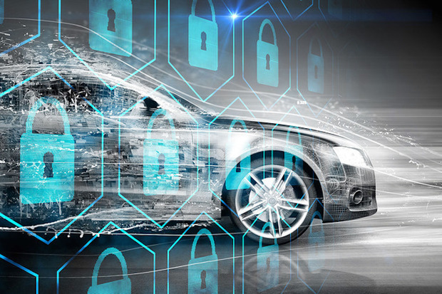
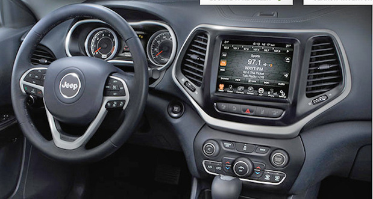
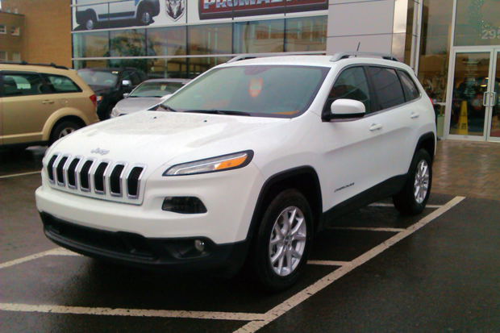

By Lucas Mearian
A security expert who recently demonstrated he could hack into a Jeep and control its most vital functions said the same could be done with hundreds of thousands of other vehicles on the road today. Security experts Charlie Miller and Chris Valasek collaborated with Wired magazine to demonstrate how they could remotely hack into and control the entertainment system as well as more vital functions of a 2015 Jeep Cherokee. Both hackers are experienced IT security researchers. Miller is a former NSA hacker and security researcher for Twitter and Valasek is the director of security research at IOActive, a consultancy. As the Wired reporter drove the vehicle on a highway, the hackers were able to manipulate its radio and windshield wipers and even shut the car down. The vehicle hack took place as Wired reporter Andy Greenberg drove the Jeep Cherokee on Rte. 40 in St. Louis. The hackers were 10 miles away at the time. The hackers said they were able to use the cellular connection to the Jeep's entertainment system or head unit to gain access to other systems; a vehicle's head unit is commonly connected to various electronic control units (ECUs) located throughout a modern vehicle. There can be as many as 200 ECUs in a vehicle.
It took Miller and Valasek about a year to hack into Chrysler's UConnect head unit, and according to Miller, it required three steps.
"The first step I thought would be the hardest: to find a remote vulnerability and write an exploit for it. It turned out that was actually rather easy, so I had that done in about three weeks," Miller said. "The second step I thought would be really easy, was really hard. That took us maybe three months." The final step of sending CAN messages to vehicle systems was simply an exercise in discovering which messages controlled which functions, Miller explained. Jon Allen, a principal analyst at consultancy Booz Allen Hamilton, said he was uncertain whether the hackers' prior access to the vehicle helped enable the attack. At the DefCon hacker conference in 2013, Miller and Valasek demonstrated they were able to hack into a Ford Escape and a Toyota Prius and control the brakes and steering. That hack, however, required physical access to the onboard diagnostics (OBD-II) computer port on each vehicle. Since 1996, OBD II ports have been standard on all U.S. vehicles, and they allow access to ECU data. WHAT READERS LIKE legal issues Woman recruited by Google four times and rejected, joins suit w10 notification for windows media gallery 9 reasons not to upgrade to Windows 10 -- yet Windows 10 download before release date Windows 10 -- download full version, before release date (RTM build 10240) "That's no different from pouring sugar into a vehicle's gas tank. All you need is physical access. Valasec and Miller are good about getting headlines," Allen said. "They did have physical access to the vehicle before they hacked it." Miller said the Chrysler Jeep Cherokee belonged to him, but prior access to the vehicle was not needed for the zero day-style attack to take place. "We could have easily done the same thing on one of the hundreds of thousands of vulnerable vehicles on the road," Miller said. "We gained access by exploiting a vulnerability that was present on the head unit (i.e. the radio/navigation thingie) that was accessible over the Internet. It did not require any physical access or changes to the vehicle." The attack, will work on any Chrysler vehicle with the Uconnect telematics system from late 2013, all of 2014, and early 2015 -- that includes Dodge, Ram and Jeep model vehicles. The physical equipment needed to perform the vehicle hack was relatively simple: Miller and Valasek used a Kyocera Android smartphone as a W-iFi hotspot connected to a MacBook laptop. The head unit on the Chrysler was linked to the Internet by Sprint's cellular network. Vehicle manufacturers routinely collect information on vehicles through cellular networks in order to alert drivers that maintenance or repairs may be required. Today, more vehicle manufacturers are also embedding Wi-Fi routers to enable mobile Internet connectivity. Miller said his Jeep Cherokee has a Wi-Fi option, but that it's the cellular function that allows access from anywhere.
Through the cellular connection, Miller and Valasek are able to gain a vehicle's GPS coordinates, vehicle identification number, and, more importantly, its IP address. Miller said the vulnerability that allowed the attack is exclusive to Chrysler's UConnect head unit, but there are likely similar types of security holes on other vehicles' telematics systems. Miller and Valasek have been communicating their research with Chrysler for the past nine months or so, which allowed the company to release a software patch to help prevent future attacks. Ron Montoya, consumer advice editor with Edmunds.com, said he was surprised physical access was not required for the vehicle hack, but he also doesn't think hacking a vehicle is as easy as it may seem. "This is a group of researchers that have been dedicating their lives the past couple of years to doing this, and they have very high skill levels. They're security engineers," Montoya said. "I don't think this is something to freak out over. It does [give] awareness to automakers that they need to take a hard look at security on their vehicles." To create more secure vehicles, Montoya believes manufacturers must ultimately find a way to isolate driving functions from infotainment systems. Allen agreed that widespread vehicle attacks are not likely to happen in the future because there would be little monetary incentive to them and they'd require a great deal of work. Securing vehicles from wireless hacks has less to do with a firewalls and more to do with recognizing an attack is happening and shutting it down before it can manipulate the car. Miller agreed. "You need to take a layered approach, just like you do in enterprise security," Miller said. "The CAN bus is very simple. The messages on it are very predictable, but when I start sending messages to cause attacks..., those messages stand out very plainly." Carmakers could easily upgrade software to detect malicious CAN messages and instruct critical vehicle systems, such as brakes or transmission, to ignore them, Miller said. Sens. Edward Markey (D-Mass.) and Richard Blumenthal (D-Conn.) filed legislation this week that would require the federal government to establish standards to ensure that automakers secure a driver against vehicle cyber attacks. Among other things, the Security and Privacy in Your Car (SPY Car) Act calls for vehicles to be equipped with technology that can detect, report and stop hacking attempts in real time. "An intrusion detection system for the car network. It's something we've been advocating for a long time," Miller said. "Yeah, Chrysler fixed this particular remote flaw, but there are probably others. We can't build perfect software. Someone is going to hack into another vehicle head unit someday."
Reference:
http://www.computerworld.com/article/2951489/telematics/hacker-hundreds-of-thousands-of-vehicles-are-at-risk-of-attack.html